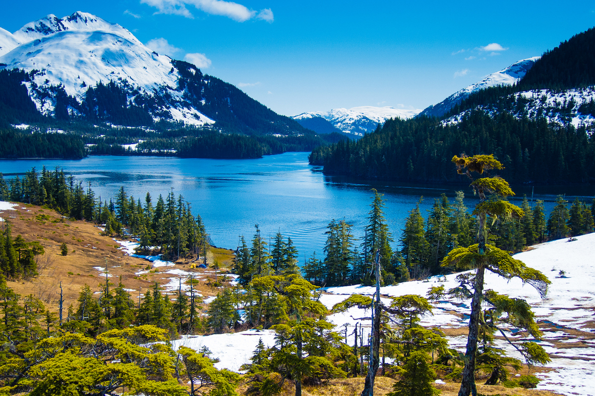

Spring in Alaska
Aaaah, spring. Birds are chirping, flowers are budding, snow is melting. In Alaska, spring mean more sunlight after almost total darkness in the winter (yay!). Gray whales return to the Alaskan waters, and moose begin having their babies. Other wildlife, such as bears, become more active too. Many migratory birds also show up to make their summer nests. The snow melts slowly and becomes slushy, although the mountain peaks will keep their snow for a while (and in some cases, through the entire summer). By May, the sun won't set until 11pm. Alaska has a vibrant indigenous population, and several festivals occur throughout the spring. Of course, spring also means the start of cruising season.